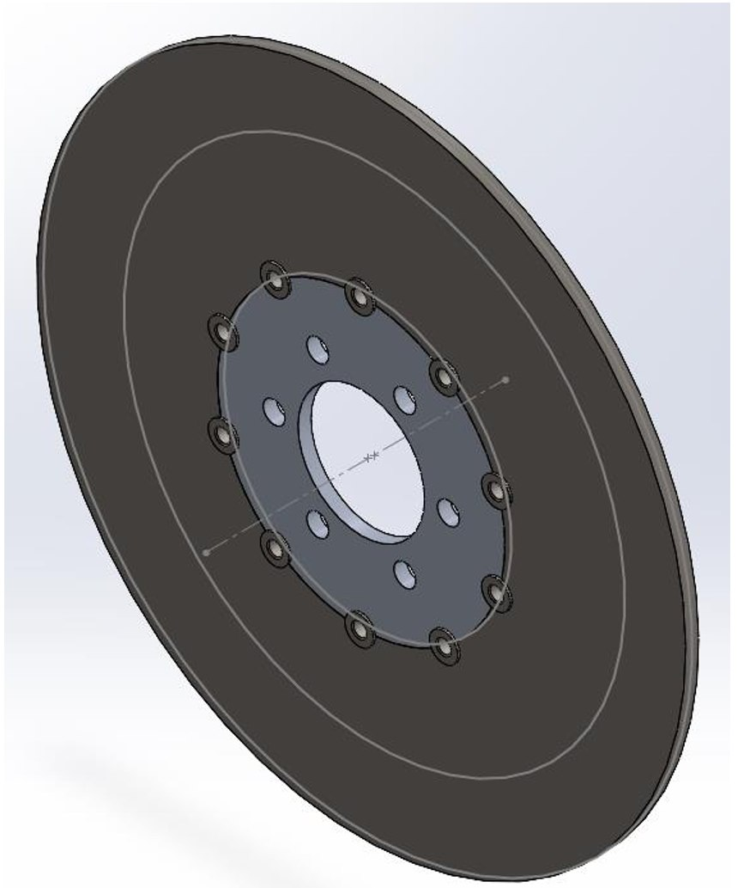

Obiettivo del progetto
Ridurre la massa di un disco freno flottante da motocicletta conservando le regioni funzionali e verificando il comportamento strutturale delle nuove geometrie.
Attività del gruppo
- Modellazione CAD e dimensionamento dei carichi; analisi statiche con controllo della convergenza della mesh.
- Confronto fra ottimizzazione parametrica e topologica, ricostruzione delle geometrie e verifica dell'assieme.
- Analisi di sensibilità alla ripartizione del carico, valutazione a fatica e preparazione dello slicing FDM con stima di tempi e costi.
Risultati
Nel modello, la massa dell'assieme passa da 2.831,6 a 1.861,8 g. La campana si alleggerisce del 29,1% e la fascia del 35,3%. La relazione individua nella finitura dei fori e delle sedi della campana un requisito per la verifica a fatica.
Ipotesi e limiti
Risultati numerici di un progetto universitario. Il prototipo FDM in PLA è previsto per verificare forma e montaggio, non per l'impiego come componente frenante. Restano da sviluppare prove fisiche e analisi termo-strutturali.

Ruolo nel progetto
Partecipazione al progetto universitario in un team di quattro persone. Le attività e i risultati qui presentati si riferiscono al lavoro del gruppo.
Immagini tratte dagli elaborati del team. Scheda di sintesi per il portfolio; documentazione completa disponibile su richiesta.